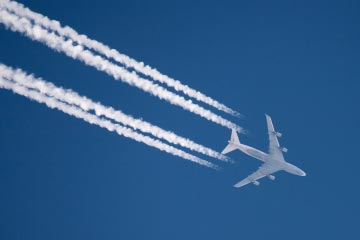

Chemtrails are supposedly the exhaust trails of jet planes, that are injected with poisons to go into the atmosphere.The theroy of chemtrails began in the 1990s when investigative journalists began describing chemtrails, which they said, were made by the government.
Jeff Rense, formerly a host of "Sightings", a web radio show, stated on what chemtrails look like and can be: "Chemtrails (CTs) look like contrails initially, but are much thicker, extend across the sky and are often laid down in varying patterns of Xs, tick-tack-toe grids, cross-hatched and parallel lines. Instead of quickly dissipating, chemtrails expand and drip feathers and mare’s tails. In 30 minutes or less, they open into wispy formations which join together, forming a thin white veil or a ‘fake cirrus-type cloud’ that persists for hours. . . ."
At its most extreme, conspiracy theorists believe that the contrails are actually streams of toxic “mind-control” chemicals, which dilute before they reach the ground, leaving a gas we breathe in that keeps the general population in check. But Dane Wigington, a solar energy expert and former employee of Bechtel Power Corp, claims the “chemtrails” are made up of precursor sulphide gases such as hydrogen sulphide (H2S) to artificially reflect the sun’s rays and limit global warming. Wingington then goes on to say, “Geoengineering programs are radically disrupting weather patterns, disrupting the water cycle (causing drought in some areas, flooding others), destroying the ozone layer, and contaminating the entire planet with the toxic fallout from these atmospheric spraying operations."
Even though there are some forms of evidence to say that chemtrails are real, there is no solid proof. This is still a theroy. Chemtrails are actually somewat believable on terms of being realistic. Most theroies are just fun to think about, but this is something that could actually be true. We may never know if chemtrails exist and if they effect us or the atmosphere in any way.